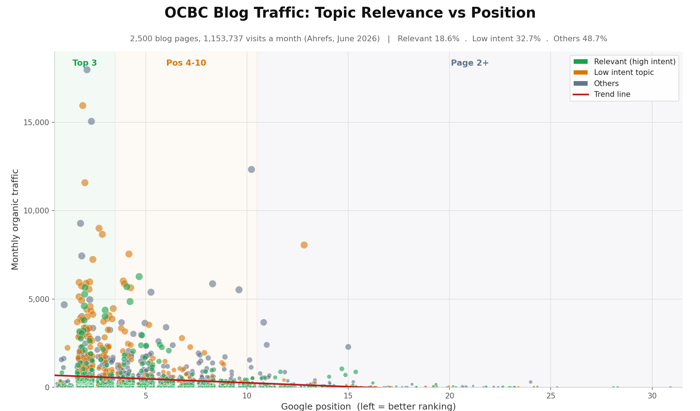

OCBC IndonesiaSEO & GEO growth strategy
Converting the largest earned reach in Indonesian banking into product demand — in search, and in the AI answers where buyers now decide.
Section 02
The GEO opportunity
Search is no longer only a list of links. Buyers ask a question in their own words and act on the answer they are given. OCBC is already in that answer — but as an article about dream meanings, not as a bank with a product to sell.
60 live buyer questions tested across Google AI Overview, ChatGPT and Gemini — savings and credit card, June 2026
02 / 30
SEO — Traditional search
Classic SEO: ten blue links compete for a click.

Google, “what is seo” — ranked pages, every visit a click away.
AEO — AI search
AI SEO / AEO / GEO: the AI answer mentions a few brands.

Google AI Overview, “aeo agency singapore” — the answer names Novastacks. Cited, not ranked.
GEO opportunity / The shift
Buying decisions moved
inside AI answers this year.
AI now answers the question before anyone reaches a link. As SparkToro's Amanda Natividad puts it, “the click is now optional.”
Conductor 2026 (21.9M queries) · SparkToro 2026 clickstream · Adobe Analytics 2026, US retail
04 / 30
GEO opportunity / The distinction
Why GEO and SEO
are different disciplines
Exclusive sets. SEO is the left column plus the middle; GEO is the right column plus the middle.
Qualified organic pipeline and revenue
Rank and traffic reporting
Self-reported discovery, CRM source
Citation and share-of-voice tracking
Source to be added
05 / 30
GEO opportunity / Scope
GEO has broader scope than classic SEO
Most of the work is shared. Ten inputs are not — and the outcome you buy is different at the top.
Keyword and intent research
On-page optimisation
Link equity management
Local profile management
Audience and competitive set
Crawl and index management
Internal linking and architecture
Structured data markup
Digital PR and media relations
Third-party listicle and review placement
Prompt and conversation research
AI crawler access control
Raw-HTML retrieval readiness
Passage-level chunking
Entity consistency
Original research and first-party data
Content refresh cadence
Unlinked mention cultivation
Community and UGC presence
Multimodal asset distribution
Training-corpus presence
Source to be added
06 / 30
GEO opportunity / What you cannot see
AI answer impact is bigger
than you see
Analytics dashboards report a small fraction of AI-driven demand, because AI assistants do not pass referrer data the way search engines do. The influence is already in the pipeline — it simply arrives unlabelled, as direct or unassigned traffic.
Why this matters now
OCBC already has AI-influenced revenue. It is simply not visible, so it is not being defended. The first fix is measurement, not spend: make “ChatGPT / AI assistant” a discrete option on OCBC enquiry forms — beside Google and social, never buried under “Other”.
Self-attribution and dark-funnel ranges: Siege Media, 2026 — GEO ROI attribution framework. Agency-published methodology, not independent research.
07 / 30
GEO opportunity / Position
#2 for brand mentions in AI.
#4 at the buyer's moment.
Being mentioned across broad banking topics is not the same as being cited when someone is choosing a product. Those are two different measurements — and OCBC ranks very differently on each.
AI brand visibility — product prompts
| Brand | Visibility | Share of voice | Avg. position |
|---|---|---|---|
| BCA | 68.2% | 30.2% | 1.5 |
| Mandiri | 65.6% | 29.0% | 1.8 |
| CIMB Niaga | 23.4% | 10.3% | 2.7 |
| OCBC NISP | 21.4% | 9.5% | 2.6 |
| DBS | 20.5% | 9.1% | 2.3 |
60 live buyer questions — who gets cited
| Bank | Citations | Mostly via |
|---|---|---|
| BCA | 55 | Product pages (95%) |
| Bank Mandiri | 46 | Product pages (89%) |
| CIMB Niaga | 33 | Mixed (52% product) |
| OCBC | 31 | Blog (77%) |
| BRI | 10 | Product pages |
Three problems compound
Position — #4 of 5 at the point of decision. Quality — 77% of citations are blog, not product. Discovery — OCBC is cited in only 60% of non-branded questions, and in just 3 of 8 "best bank for X".
Left: WorkDuo AI brand visibility, product prompts — top 5 of 10 tracked brands. Right: live testing of 60 real buyer questions
08 / 30
GEO opportunity / Quality
When AI cites OCBC, it cites an article
— competitors get cited as a product
Every page AI actually quotes is educational. The bank is present in the answer; the product is not.
Cited via blog vs product page — 60 questions
| Bank | Blog | Product | Product share |
|---|---|---|---|
| BCA | 3 | 52 | 95% |
| Bank Mandiri | 5 | 41 | 89% |
| BRI | 0 | 10 | 100% |
| CIMB Niaga | 16 | 17 | 52% |
| OCBC | 24 | 7 | 23% |
The pages AI quotes today
- /article/… arti-mimpi-dapat-uang-banyak — the meaning of dreaming about money
- /article/… cara-membuat-e-toll — how to make an e-toll card
- /article/… kegiatan-ekonomi-adalah — what economic activity is
- /article/… cara-mengetahui-bank-dari-nomor-rekening
Not one product page
No deposito, KPR, KTA or kartu kredit page appears among the pages AI cites. The authority is being earned by content that cannot sell anything.
Source: 60 live buyer-question tests, Google AI Overview / ChatGPT / Gemini, June 2026
09 / 30
GEO opportunity / The funnel
Visibility is upside-down
relative to the funnel
OCBC shows up while buyers are learning, and thins out exactly where cards are chosen. When a buyer is ready to apply, AI cites an article — not an application page. Across all 30 credit-card questions only 2 citations land on a product page: the last click before conversion is being handed to a blog post.
Credit card — 30 live buyer questions
| Stage | What the buyer is doing | Questions | OCBC cited | Via product page |
|---|---|---|---|---|
| TOFU | Learning how cards work | 8 | 4 | 0 |
| MOFU | Choosing between cards | 20 | 8 | 2 |
| BOFU | Ready to apply | 2 | 2 | 0 |
Source: 30 live credit-card buyer questions classified by funnel stage — Google AI Overview, ChatGPT and Gemini, Indonesia, June 2026
10 / 30
GEO opportunity / Savings
Strongest when they learn.
Absent when they compare.
OCBC leads at 46.0% while buyers research saving, then collapses to 16.0% at the comparison stage — the moment the account is actually chosen.
AI search visibility, tracked daily 25–29 July 2026 across ChatGPT, Perplexity and Google AI Overview. Same six brands and same 0–100 scale on every chart, so the four views are directly comparable
11 / 30
GEO opportunity / Credit card
Visible while they learn.
Invisible when they apply.
OCBC holds 24–29% while buyers are researching, then falls to 15.4% at the apply moment — where Mandiri averages 76.9% and BCA 64.1%.
AI search visibility, tracked daily 25–29 July 2026 across ChatGPT, Perplexity and Google AI Overview. Same six brands and same 0–100 scale on every chart, so the four views are directly comparable
12 / 30
GEO opportunity / Digital banking
Visibility halves at
every step of the funnel.
OCBC’s weakest AI position: 14.2% overall, falling from 22.5% to 12.0% to 6.7% at the point of opening an account — where Mandiri holds 67–83%.
AI search visibility, tracked daily 25–29 July 2026 across ChatGPT, Perplexity and Google AI Overview. Same six brands and same 0–100 scale on every chart, so the four views are directly comparable
13 / 30
GEO opportunity / The cause
OCBC has the product.
It has not published the message.
In 6 of 8 questions OCBC loses, it already offers exactly what the buyer asked for. It lost because the answer was never written in the buyer's framing. That is a distribution and narrative gap, not a product gap — and it's fixable.
| Buyer question | Who AI recommended instead | OCBC has it | The message OCBC has not published |
|---|---|---|---|
| Bunga deposito terbaik? | SeaBank, Neo, Krom | Yes | A clear, comparable deposito rate on the page |
| Tabungan terbaik sehari-hari? | Blu by BCA, Jago | Yes — Nyala | "Tabungan tanpa biaya admin", in buyer language |
| Investasi reksa dana & obligasi? | Mandiri, BCA, Bibit | Yes | "OCBC is an APERD agent & bond distributor" |
| Promo kartu kredit terbaik? | Mandiri, BCA, UOB | Yes | A dedicated, crawlable, maintained promo page |
| KPR terbaik? | BTN, CIMB, Mandiri | Yes | A citable KPR page with rate and tenor as text, not PDF |
| KTA terbaik? | Aggregators, BCA, DBS | Yes | A citable KTA page with plafon, bunga, syarat as a table |
Source: live buyer-question testing, June 2026 — each row is a question where AI named a competitor and OCBC offers the same product
14 / 30
Section 03
Why us
OCBC has the product and the reach. What is missing is the work that turns both into the answer AI gives. This is the team that does that work, the disciplines it takes, and the method we run.
The team is the differentiator
15 / 30
Why us / The team
Your strategy is set by senior operators,
not handed to junior staff.

Tina Chu
Founder & CEO
Strategy. 20 years of marketing leadership at Expedia, Tencent and Klook sets your direction right the first time.
Builder & trainer. Certified SMU AI-marketing trainer; runs corporate agentic-system workshops for brands including tiket.com.

Eki Riandra
Head of Search & Commerce
Search authority. Ex-Tech SEO Head of Traveloka and Tokopedia; Google Product Expert.
Proven with Google. Co-authored the Tokopedia growth case study with Google.
The team is the differentiator
16 / 30
Why us / Why we're different
Winning AI answers takes three disciplines.
Most have one. Some have two. We run all three.
Expertise
Augmentation
Engineering
three
- 01Domain expertise
- 02AI augmentation
- 03Context engineering
Run all three together and your brand becomes the answer AI gives — not just a link it lists.
Positioning · Outcome = being chosen by AI
17 / 30
Why us / The Source & Echo Method
The Source & Echo Method
is Novastacks' own AEO methodology.
Every AI answer is assembled from content worth quoting — the source — and from what the rest of the internet says about you — the echo. We engineer both, with five systems that are built and running, not advised.
Prompt Radar Pro finds every question worth winning. Two source systems and the Echo Network go win them. The Proof Loop measures daily and reports in pipeline.
- Prompt Radar ProSYS · 01
- Answer ArchitectureSYS · 02
- First-Party AnswersSYS · 03
- Echo NetworkSYS · 04
- Proof LoopSYS · 05

One buyer prompt through the method: the radar detects it, the source and echo tracks win it, the loop proves it.
Method · The Source & Echo Method
18 / 30
Gap 1 / Content mix
Only 18.6% of blog traffic
carries commercial intent
Nearly half the audience arrives for dream meanings, horoscopes and trivia. The lever is rebalancing the mix, not producing more content.
Blog traffic by intent
| Content category | Monthly traffic | Share | Pages |
|---|---|---|---|
| Relevant — commercial intent | 214,287 | 18.6% | 792 |
| Low-intent — study material | 377,707 | 32.7% | 351 |
| Off-topic — dreams, horoscopes, trivia | 561,743 | 48.7% | 1,357 |
| Total | 1,153,737 | 100% | 2,500 |
The rebalance
Prune or consolidate off-topic content; reinvest in commercial-intent topics — "tabungan tanpa biaya admin", "kartu kredit cicilan 0%", "cara buka rekening online" — and link them into the product pages.
Where the strength sits

- The biggest, best-ranked clusters are the low-intent and off-topic ones — not the topics buyers search before choosing a bank.
Source: OCBC blog page-level classification, 2,500 pages, Ahrefs traffic June 2026
19 / 30
Gap 2 / The money pages
The pages that sell are
invisible by construction
Verified live, June 2026: core product pages return no H1 at all, product detail is pushed into PDFs, and structured data stops at Breadcrumb.
| Core OCBC page | Heading 1 | Structured data | Detail trapped in PDF |
|---|---|---|---|
| /simpanan/tabungan-berjangka | None | Breadcrumb only | — |
| /simpanan/deposito | None | Breadcrumb only | — |
| /pinjaman/kredit-pemilikan-rumah (KPR) | None | Breadcrumb only | — |
| /kartu-transaksi/kartu-kredit | None | Breadcrumb only | — |
| /simpanan/tabungan/tabunganku | "Informasi Lebih Lanjut" | Breadcrumb + non-standard (no Product) | Yes — RIPLAY |
What is missing on the page
- No H1, or an H1 that labels a section rather than the product.
- Titles not built around the target term — KPR, KPM.
- Rates and terms inside PDFs, where neither Google nor an AI model will quote them.
What is missing in the markup
- No Organization, Website or Product schema — only Breadcrumb.
- No FAQPage markup on pages that already display FAQs.
- No llms.txt, no x-default hreflang, broken calculator navigation, missing breadcrumbs sitewide.
Source: live crawl of ocbc.id core product pages, June 2026 — this is on-page work on assets that already exist
20 / 30
The plan
What you get is sharp growth
in your buyer-relevant traffic
and product-level AI citations.
Not "more" — a rebalance. Prune the off-topic content, reinvest in commercial-intent topics, and make the pages that sell retrievable.
- A unique, intent-matched H1 and title on every core product page.
- Product detail out of PDFs and onto the page as crawlable text.
- Blog → product internal linking to route existing authority.
- Full structured data: Organization, Website, Product / FinancialProduct, FAQPage, Breadcrumb.
- Make product pages retrievable and citable — reverse the 77 / 23 blog-to-product split.
- Publish the missing message in the buyer's framing.
- Commercial-intent assets: calculators, a structured promo hub, comparison pages.
- llms.txt and snippet-extractable formatting — key takeaways, FAQ schema, tables.
Both engines run on pages OCBC already owns — the programme adds structure and message, not volume
21 / 30
What to expect / Where to start
Same engine, better fuel
Total organic traffic grows moderately — by design. What grows sharply is buyer-relevant traffic and product-level AI citations.
The enabler. Directional estimates become measured, and the programme reports against real query data.
H1s, intent-matched titles, detail out of PDFs, and structured data on the savings and credit-card pages.
Blog → product internal linking; rebalance the intent mix — prune off-topic, brief commercial-intent topics.
Calculators, a structured promo hub, comparison pages, llms.txt, and the message-gap content.
Estimates are directional until OCBC's Search Console is connected; from that point they are measured
22 / 30
Executive summary
The largest reach in Indonesian banking
— and the lowest commercial yield
OCBC does not have a traffic problem. It has a traffic-relevance problem and an AI-visibility gap. The work is not more traffic; it is converting earned reach into product demand.
The opportunity
Close the gap between reach and revenue pages. OCBC already owns the hard inputs — category-leading organic reach and the #2 AI share of voice. What is missing is the conversion of that authority into product visibility at the moment a buyer chooses.
Sources: Ahrefs (Indonesia), live crawl June 2026, 60 live buyer-question tests across Google AI Overview, ChatGPT and Gemini
23 / 30
The starting position
Most pages of anyone in the set.
Fourth in traffic.
More pages are not producing more visitors. OCBC publishes the most and ranks fourth — the footprint is built, the yield is not.
Competitive standing — organic
| Bank | Organic visits / mo | Indexed pages |
|---|---|---|
| CIMB Niaga | 2,669,353 | 2,075 |
| BRI | 1,740,730 | 3,332 |
| Bank Mandiri | 1,363,101 | 2,603 |
| OCBC | 1,249,737 | 3,664 |
| Jenius | 65,679 | 568 |
What it means
- #1 for pages, #4 for traffic. The largest library in the category is not translating into the largest audience.
- ~95% of organic traffic lands on the blog. The pages that sell tabungan, deposito, KPR and KTA capture a sliver.
- #2 AI share of voice (31.4%) — ahead of Mandiri and BRI, both much larger banks. Earned through articles, not products.
- The asset is real. Reach and authority are the hardest things to build, and OCBC already has both.
Source: Ahrefs, Indonesia market, June 2026
24 / 30
The problem
The educational engine is strong.
The bridge to the products is not.
OCBC earns 69 visitors per product page. Bank Mandiri earns 1,457 — 21× more per page, from fewer pages.
| Bank | Product traffic / mo | Product pages | Traffic per page |
|---|---|---|---|
| Bank Mandiri | 97,649 | 67 | 1,457 |
| BRI | 187,438 | 202 | 928 |
| Jenius | 9,663 | 26 | 372 |
| CIMB Niaga | 221,634 | 639 | 347 |
| OCBC | 17,362 | 251 | 69 |
So what
Chasing additional blog volume would add roughly 3% on top of today's traffic — that is not the prize. The prize is relevance and conversion: routing an audience OCBC already owns into the pages that sell.
Source: Ahrefs product-page traffic, Indonesia, June 2026
25 / 30
Savings / Credit card
The same pattern on the two priority products
On savings, OCBC runs 22 pages to earn 759 visits. Mandiri runs one page and earns 4,780.
Savings — tabungan
| Bank | Traffic | Pages | Per page |
|---|---|---|---|
| Bank Mandiri | 4,780 | 1 | 4,780 |
| BRI | 35,086 | 33 | 1,063 |
| CIMB Niaga | 7,995 | 74 | 108 |
| OCBC | 759 | 22 | 34 |
Credit card — kartu kredit
| Bank | Traffic | Pages | Per page |
|---|---|---|---|
| BRI | 42,163 | 125 | 337 |
| OCBC | 2,068 | 9 | 230 |
| Mandiri (kartu site) | 61,000 | 549 | 111 |
| CIMB Niaga | 8,569 | 126 | 68 |
The difference is on the page, not in the product
Both banks run a "TabunganKu". Mandiri's single page carries the product name as its H1, the benefits and terms as on-page text, and an interest table. OCBC's H1 reads "Informasi Lebih Lanjut" and the rates sit inside a RIPLAY PDF.
Sources: Ahrefs, Indonesia; live page crawl of bankmandiri.co.id/tabunganku and ocbc.id TabunganKu, June 2026
26 / 30
Appendix / Method
Savings prompts 1–15
Reference only — the deck does not walk through these individually. TOFU learning · MOFU choosing · BOFU ready to act. This half: 2 TOFU · 12 MOFU · 1 BOFU.
| # | Stage | Buyer question — in their own words, with English translation |
|---|---|---|
| S01 | MOFU | Bank yang bisa membuka rekening tabungan secara online tanpa harus ke cabang?Which bank lets me open a savings account online without going to a branch? |
| S02 | MOFU | Tabungan tanpa biaya admin bulanan dan tanpa saldo minimum?A savings account with no monthly admin fee and no minimum balance? |
| S03 | MOFU | Tabungan dengan bunga paling tinggi untuk menabung jangka panjang?The highest-interest savings account for long-term saving? |
| S04 | MOFU | Aplikasi tabungan yang ada fitur atur uang atau kantong terpisah untuk budgeting?A savings app with separate pockets for budgeting? |
| S05 | MOFU | Tabungan terbaik untuk anak muda atau gaji pertama di Indonesia?Best savings account for young people or a first salary in Indonesia? |
| S06 | MOFU | Tabungan untuk anak atau pelajar yang aman dan mudah dibuka?A savings account for children or students, safe and easy to open? |
| S07 | MOFU | Rekomendasi tabungan berjangka untuk mencapai target keuangan?Recommended term savings for reaching a financial goal? |
| S08 | MOFU | Tabungan rencana untuk DP rumah atau persiapan menikah, pilih yang mana?Which savings plan for a house deposit or a wedding? |
| S09 | BOFU | Cara membuka rekening tabungan hanya dengan KTP?How to open a savings account with only an ID card? |
| S10 | MOFU | Tabungan yang gratis biaya transfer ke bank lain?A savings account with free transfers to other banks? |
| S11 | MOFU | Tabungan haji dan umrah terbaik di Indonesia?Best hajj and umrah savings accounts in Indonesia? |
| S12 | TOFU | Nabung emas di bank, apakah aman dan menguntungkan?Is saving in gold at a bank safe and profitable? |
| S13 | MOFU | Tabungan dalam mata uang asing seperti dollar, untuk apa dan di bank mana?Foreign-currency savings — what for, and at which bank? |
| S14 | TOFU | Apakah uang di tabungan saya dijamin LPS kalau banknya bermasalah?Is my money guaranteed by LPS if the bank fails? |
| S15 | MOFU | Tabungan dengan fitur autodebet supaya bisa menabung otomatis?A savings account with auto-debit so saving is automatic? |
Tested live June 2026 via Google AI Overview, ChatGPT and Gemini. Funnel stage for savings is our classification, applied on the same basis as the credit-card set
27 / 30
Appendix / Method
Savings prompts 16–30
Reference only — the deck does not walk through these individually. TOFU learning · MOFU choosing · BOFU ready to act. This half: 4 TOFU · 11 MOFU · 0 BOFU.
| # | Stage | Buyer question — in their own words, with English translation |
|---|---|---|
| S16 | MOFU | Bank digital dengan bunga tabungan tinggi dan tanpa biaya?A digital bank with high savings interest and no fees? |
| S17 | MOFU | Tabungan yang ada cashback atau promo untuk nasabah baru?A savings account with cashback or a promo for new customers? |
| S18 | TOFU | Berapa setoran awal untuk membuka rekening tabungan?How much is the initial deposit to open a savings account? |
| S19 | MOFU | Tabungan untuk dana darurat, sebaiknya pilih jenis yang mana?Which type of savings account suits an emergency fund? |
| S20 | TOFU | Tabungan vs deposito, lebih baik menyimpan uang di mana?Savings vs time deposit — where is it better to keep money? |
| S21 | MOFU | Tabungan bisnis atau giro untuk pemilik usaha UMKM?Business savings or a current account for a small-business owner? |
| S22 | TOFU | Cara menabung otomatis setiap gajian biar lebih konsisten?How to save automatically every payday to stay consistent? |
| S23 | MOFU | Tabungan dengan kartu debit yang bisa dipakai belanja online?A savings account with a debit card usable for online shopping? |
| S24 | MOFU | Tabungan yang bunganya dihitung harian, ada di bank mana?Which bank calculates savings interest daily? |
| S25 | MOFU | Rekening bersama atau joint account untuk pasangan, bisa di bank mana?A joint account for couples — which bank offers it? |
| S26 | MOFU | Tabungan untuk ibu rumah tangga mengatur uang belanja bulanan?A savings account for managing the monthly household budget? |
| S27 | MOFU | Aplikasi tabungan dengan mobile banking yang lengkap dan mudah dipakai?A savings app with complete, easy-to-use mobile banking? |
| S28 | MOFU | Tabungan untuk persiapan pensiun atau hari tua?A savings account for retirement or old age? |
| S29 | MOFU | Tabungan yang memberikan poin reward atau hadiah?A savings account that gives reward points or prizes? |
| S30 | TOFU | Tabungan syariah tanpa bunga, bagaimana cara kerjanya?Sharia savings without interest — how does it work? |
Tested live June 2026 via Google AI Overview, ChatGPT and Gemini. Funnel stage for savings is our classification, applied on the same basis as the credit-card set
28 / 30
Appendix / Method
Credit-card prompts 1–15
Reference only — the deck does not walk through these individually. TOFU learning · MOFU choosing · BOFU ready to act. This half: 3 TOFU · 11 MOFU · 1 BOFU.
| # | Stage | Buyer question — in their own words, with English translation |
|---|---|---|
| C01 | MOFU | Kartu kredit cicilan 0% di banyak merchant0% instalments at many merchants |
| C02 | MOFU | Banyak promo dan cashbackPlenty of promos and cashback |
| C03 | BOFU | Apply online dengan mudahEasy to apply online |
| C04 | MOFU | Tanpa iuran tahunan / gratis annual feeNo annual fee |
| C05 | MOFU | Untuk pemula, limit mudah disetujuiFor beginners, a limit that is easily approved |
| C06 | TOFU | Gaji minimal untuk applyMinimum salary needed to apply |
| C07 | MOFU | Terbaik untuk belanja onlineBest for online shopping |
| C08 | MOFU | Benefit airport lounge gratisFree airport lounge access |
| C09 | MOFU | Reward miles untuk sering travelingReward miles for frequent travellers |
| C10 | MOFU | Promo dining / diskon restoranDining promos / restaurant discounts |
| C11 | MOFU | Belanja kebutuhan sehari-hari di supermarketEveryday supermarket shopping |
| C12 | MOFU | Cashback bensin di SPBUFuel cashback at petrol stations |
| C13 | MOFU | Cicilan elektronik / gadgetInstalments for electronics and gadgets |
| C14 | TOFU | Syarat & dokumen apply pertamaRequirements and documents for a first application |
| C15 | TOFU | Cara menaikkan limitHow to raise the credit limit |
Tested live June 2026 via Google AI Overview, ChatGPT and Gemini. Funnel stage as classified in the source analysis; four servicing queries sit outside the acquisition funnel
29 / 30
Appendix / Method
Credit-card prompts 16–30
Reference only — the deck does not walk through these individually. TOFU learning · MOFU choosing · BOFU ready to act. This half: 5 TOFU · 9 MOFU · 1 BOFU.
| # | Stage | Buyer question — in their own words, with English translation |
|---|---|---|
| C16 | TOFU | Bayar tagihan supaya tidak kena bungaPaying the bill to avoid interest |
| C17 | TOFU | Bunga & denda kalau telat bayarInterest and penalties for late payment |
| C18 | TOFU | Cara kerja kartu kredit untuk pemulaHow credit cards work, for beginners |
| C19 | MOFU | Tanpa slip gaji, apakah bisa diajukanCan you apply without a payslip? |
| C20 | MOFU | Untuk mahasiswa / first jobberFor students and first jobbers |
| C21 | MOFU | Terbaik transaksi luar negeri tanpa biayaBest for overseas transactions with no fees |
| C22 | TOFU | Cara tukar poin reward jadi hadiahHow to redeem reward points for gifts |
| C23 | MOFU | Co-branding maskapai / e-commerceAirline and e-commerce co-branded cards |
| C24 | MOFU | Contactless / tap to payContactless / tap to pay |
| C25 | MOFU | Supplementary untuk anggota keluargaSupplementary cards for family members |
| C26 | BOFU | Apply online proses cepatFast online application |
| C27 | MOFU | Limit besar untuk pengeluaran tinggiA high limit for big spending |
| C28 | MOFU | Promo cicilan tetap, bunga ringanFixed instalment promos at low interest |
| C29 | TOFU | Cara aktivasi kartu baruHow to activate a new card |
| C30 | MOFU | Virtual untuk transaksi online lebih amanVirtual cards for safer online transactions |
Tested live June 2026 via Google AI Overview, ChatGPT and Gemini. Funnel stage as classified in the source analysis; four servicing queries sit outside the acquisition funnel
30 / 30